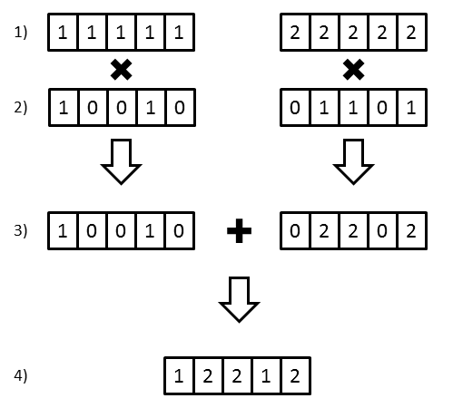

Genetic Management Tools Manual
Michael Raboin, Amanda Vinson, and R. Mark Sharp
April 12, 2020
Source:vignettes/a3manual.Rmd
a3manual.RmdIntroduction
Summary of Major
Functions
Installation
Running Shiny Application
[Input]
Pedigree Browser
Genetic Value Analysis
Summary Statistics
Breeding Group Formation
ORIP Reporting
Algorithm: Breeding Group
Formation
Algorithm: Genome
Uniqueness
Introduction
The goal of nprcgenekeepr is to implement Genetic Tools for Colony Management. It was initially conceived and developed as a Shiny web application at the Oregon National Primate Research Center (ONPRC) to facilitate some of the analyses they perform regularly. It has been enhanced to have more capability as a Shiny application and to expose the functions so they can be used either interactively or in R scripts.
This work has been supported in part by NIH grants P51 RR13986 to the Southwest National Primate Research Center and P51 OD011092 to the Oregon National Primate Research Center.
At present, the application supports 5 functions:
- Quality control of studbooks contained in text files or Excel workbooks and of pedigrees within LabKey Electronic Health Records (EHR)
- Creation of pedigrees from a lists of animals using the LabKey EHR integration
- Creation and display of an age by sex pyramid plot of the living animals within the designated pedigree
- Generation of Genetic Value Analysis Reports
- Creation of potential breeding groups with and without proscribed sex ratios and defined maximum kinships.
For more information see:
A Practical Approach for Designing Breeding Groups to Maximize Genetic
Diversity in a Large Colony of Captive Rhesus Macaques (Macaca
mulatta) Vinson, A ; Raboin, MJ Journal Of The American
Association For Laboratory Animal Science, 2015 Nov, Vol.54(6),
pp.700-707 [Peer Reviewed Journal]
Summary of Major Functions
Quality Control
Studbooks maintained by breeding colonies generally contain information of varying quality. The quality control functions of the toolkit check to ensure all animals listed as parents have their own line entries, all parents have the appropriate sex listed, no animals are listed as both a sire and a dam, duplicate entries are removed, pedigree generation numbers are added, and all dates are valid dates. In addition, exit dates are added if possible and are consistent with other information such as departure dates and death dates. Current ages of animals that are still alive are added if a database connection is provided via a configuration file and the user has read permission on a LabKey server with the demographic data in an EHR (Electronic Health Record) module. See LabKey documentation.
Parents with ages below a user selected threshold are identified. A minimum parent age in years is set by the user and is used to ensure each parent is at least that age on the birth date of an offspring. The minimum parent age defaults to 2 years. This check is not performed for animals with missing birth dates.
Creation of Pedigree From a List of Potential Breeders and
LabKey
The user can enter a list of focal animals in a CSV file that will be used to create a pedigree containing all direct relative (ancestors and descendants) via the labkey.selectRows function within the Rlabkey package if a database connection is provided via a configuration file and the user has read permission on a LabKey server with the demographic data in an EHR (Electronic Health Record) module.
Two configuration files are needed to use the database features of nprcgenekeepr with LabKey. The first file is named _netrc on Microsoft Windows operating systems and .netrc otherwise, allows the user to authenticate with LabKey through the LabKey API and is fully described by LabKey documentation
The second file is named _nprcgenekeepr_config on
Microsoft Windows operating systems and
.nprcgenekeepr_config otherwise and is the
nprcgenekeepr configuration
file An image of this example configuration file is included as a
data object and can be loaded and viewed with the following lines of R
code in the R console.
Display of an age by sex pyramid plot
Adapted from https://www.thoughtco.com/age-sex-pyramids-and-population-pyramids-1435272 on 20190603. Written by Matt Rosenberg. Updated May 07, 2019.
The most important demographic characteristic of a population is its age-sex structure. Age-sex pyramids (also known as population pyramids) graphically display this information to improve understanding and make comparison easy. The population pyramid sometimes has a distinctive pyramid-like shape when displaying a growing population.
How to Read the Age-Sex Graph
An age-sex pyramid breaks down a population into male and female genders and age ranges. Usually, you’ll find the left side of the pyramid graphing the male population and the right side of the pyramid displaying the female population.
Along the horizontal axis (x-axis) of a population pyramid, the graph displays the population either as a total population of that age or as a percentage of the population at that age. The center of the pyramid starts at zero population and extends out to the left for males and right for females in increasing size, or proportion of the population.
Along the vertical axis (y-axis), age-sex pyramids display two-year age increments, from birth at the bottom to old age at the top.
Genetic Value Analysis Reports
The Genetic Value Analysis is a ranking scheme developed at ONPRC to indicate the relative breeding value of animals in the colony. The scheme uses the mean kinship for each animal to indicate how inter-related it is with the rest of the current breeding colony members. Genome uniqueness is used to provide an indication of whether or not an animal is likely to possess alleles at risk of being lost from the colony. Under the scheme, animals with low mean kinship or high genome uniqueness are ranked more highly.
Breeding Group Formation
One of the goals in breeding group formation is to avoid the potential for mating of closely related animals. Since behavioral concerns and housing constraints will also be taken into account in the group formation process, it is our goal to provide the largest number of animals possible from a list of candidates that can be housed together without risk of consanguineous mating. To that end, this function uses information from the Genetic Value Analysis to search for the largest combinations of animals that can be produced from a list of candidates.
The default options do not consider the sex of individuals when forming the groups, though this has likely been a consideration by the user in selecting the candidate group members. Optionally the user may select to form harem groups, which considers the sex of individuals when forming groups and restricts the number of males to one per group.
Installation
You can install the CRAN version of nprcgenekeepr from the R console prompt with:
install.packages("devtools")
devtools::install_github(file.path("rmsharp", "nprcgenekeepr"))You can install the development version of nprcgenekeepr from GitHub from the R console prompt with:
install.packages("devtools")
devtools::install_github(file.path("rmsharp", "nprcgenekeepr"))All missing dependencies should be automatically installed.
Running Shiny Application
The toolset available within nprcgenekeepr can be used inside standard R scripts. However, it was originally designed to be used within a Shiny application that can be started with:
library(nprcgenekeepr) # nolint: undesirable_function_linter
runGeneKeepR()(runModularApp() also still launches the application but
is deprecated in favor of runGeneKeepR().)
Data Input and Quality Control
The Data Input and Quality Control tab is the starting point for all
analyses. This module (modInput) provides a comprehensive
interface for uploading and validating pedigree and genotype data.
File Type Options
The sidebar panel allows you to select how you are submitting data:
- File Type: Choose between Excel (.xlsx, .xls) or Text (.csv, .txt) formats
-
File Content: Select from four options:
- Pedigree(s) file only; genotypes not provided
- Pedigree(s) and genotypes in one file
- Pedigree(s) and genotypes in separate files
- Focal animals only; pedigree built from database
For text files, you can specify the separator (Comma, Semicolon, or Tab).
Required and Optional Columns
The only columns required are those specifying the Ego ID, Sire ID, Dam ID, and Sex. The remaining columns listed are optional but will be used if they are present in the uploaded file. The Input Format tab provides detailed information on allowable columns and how they will be used in quality control.
Minimum Parent Age
You can specify the minimum parent age (in years) that parents must be at the birthdate of an offspring. The default is 2.0 years. This helps identify potential data entry errors where parents appear too young.
Quality Control Results
After clicking “Read and Check Pedigree”, the module processes your data and displays results across multiple tabs:
- QC Summary: Shows counts of records processed, errors found, and warnings
- Errors: Lists critical issues that must be fixed before proceeding
- Warnings: Lists potential issues that may need review
- Cleaned Data: Preview of the validated studbook data
Each results tab includes a download button to export the data for offline review.
Module Interface
The modInput module returns reactive values that can be
used by downstream modules:
-
cleanedStudbook: The QC-cleaned studbook data frame -
genotypeData: Genotype data if provided -
qcSummary: Summary counts of errors, warnings, and records -
minSireAge: The minimum sire age value (blank uses the species default) -
minDamAge: The minimum dam age value (blank uses the species default) -
isReady: Logical indicating if data passed QC and is ready for analysis
Pedigree Browser
The Pedigree Browser tab (modPedigree) allows users to
view, filter, and export pedigree data after quality control validation.
It provides a three-column layout for documentation, focal animal
selection, and display options.
Layout Overview
The interface is organized into three panels:
Left Panel: Displays guidance documentation explaining how to use the pedigree browser and interpret the data columns.
-
Middle Panel - Focal Animals: Provides controls for specifying a subset of animals to focus the analysis on:
- Text Area: Enter animal IDs manually (one per line or comma-separated). IDs can be pasted directly from Excel.
- File Upload: Browse for and select a CSV file containing focal animal IDs.
- Update Button: Click “Update Focal Animals” to apply changes.
- Clear Checkbox: Check to clear all focal animals and reset the selection.
-
Right Panel - Display Options:
- Display Unknown IDs: Toggle display of unknown IDs (those beginning with “U”) that are created for animals with only one known parent.
- Trim Pedigree: When checked, trims the pedigree to include only the focal animals and their relatives, removing unrelated lineages.
- Export Button: Download the current pedigree view as a CSV file.
Data Table
Below the control panels, an interactive data table displays the pedigree data. Features include:
- Adjustable page length (default 15 rows)
- Horizontal scrolling for wide data
- Regex-enabled search across all columns
- Sortable columns
Module Interface
The modPedigree module accepts input from
modInput and returns reactive values for downstream
modules:
-
pedigree: The filtered pedigree data frame -
focalAnimals: Character vector of focal animal IDs -
nAnimals: Count of animals in the current view -
isReady: Logical indicating if pedigree data is available
Genetic Value Analysis
The Genetic Value Analysis tab (modGeneticValue)
provides tools for computing genetic value metrics for your population.
This module calculates Mean Kinship and Genome Uniqueness scores to help
identify genetically valuable animals.
Analysis Options
The left panel contains controls for configuring the analysis:
Gene Drop Iterations: Number of iterations for the gene-drop simulation (default: 1000, range: 100-10,000). More iterations provide more accurate genome uniqueness estimates but take longer to compute.
Calculate Genome Uniqueness: Toggle whether to run the gene-drop simulation to estimate genome uniqueness values.
Calculate Mean Kinship: Toggle whether to compute pairwise kinship coefficients and individual mean kinship values.
Minimum Breeding Age: Slider to set the minimum age (in years) for animals to be considered in the breeding population (default: 2 years).
Run Analysis: Click to start the genetic value computation.
Understanding Genetic Values
The information panel explains the key metrics:
Mean Kinship: The average kinship coefficient between an individual and all other members of the population. Lower values are better as they indicate the animal is less related to the population.
Genome Uniqueness: The proportion of an individual’s genome that is unique in the population based on gene-drop simulation. Higher values are better as they indicate the animal carries rare genetic material.
Results Tabs
After running the analysis, results are displayed across three tabs:
-
Rankings: Interactive table showing animals ranked by genetic value.
- Adjust “Show top N” to view more or fewer animals
- Download button exports the full rankings to CSV
Visualizations: Scatter plot showing the relationship between mean kinship and genome uniqueness values.
Summary: Statistical summary of genetic value metrics including means, standard deviations, and distributions.
Summary Statistics
The Summary Statistics tab (modSummaryStats) displays
comprehensive visualizations and statistics from the genetic value
analysis results.
Interface Layout
The module provides a structured display with three main sections:
Guidance Panel: At the top, an informational panel explains how to interpret the statistics and visualizations.
-
Export Buttons: A row of download buttons for exporting:
- Kinship Matrix (CSV)
- Male Founders (CSV)
- Female Founders (CSV)
- First-Order Relationships (CSV)
-
Population Summary: Dynamic HTML output showing:
- Total number of animals analyzed
- Average mean kinship across the population
- Average genome uniqueness across the population
Visualizations
The module displays six plots arranged in two columns:
Left Column - Histograms: - Mean Kinship Coefficient Distribution - Mean Kinship Z-Score Distribution - Genome Uniqueness Distribution
Right Column - Box Plots: - Mean Kinship Coefficient - Mean Kinship Z-Score - Genome Uniqueness
Each plot has an accompanying download button to export as PNG.
Statistical Summaries
The tab reports founder statistics including: - Number of known
founders, male founders, female founders - Founder equivalents and
founder genome equivalents (the latter is a gene-drop estimate, shown
inline with its sampling standard error as FG +/- SE) -
Gene diversity (GD) beside FG: the expected
heterozygosity still retained from the founding gene pool,
GD = 1 - 1 / (2 * FG), derived from the founder genome
equivalents of Lacy (1989), over the same analysis set as the founder
statistics
A separate Effective Population Size block reports two effective sizes over the current living breeders – the living animals that appear as a sire or dam, a different (usually smaller) population than the analysis set above:
-
Sex-Ratio Ne,
4 * Nm * Nf / (Nm + Nf), the Crow & Kimura (1970) effective size implied by an unequal breeding sex ratio (it equals the census when the sexes are balanced and is 0 when either breeding sex is absent) -
Variance Ne, the general Crow & Kimura (1970)
form
(N * k - 1) / (k - 1 + V / k)wherekis the mean andVthe variance of lifetime offspring counts, the effective size reduced by unequal family sizes (N/A when fewer than two living breeders are present)
Both effective sizes idealize a Wright-Fisher population (constant size, discrete generations, random union of gametes), so each is best read as an index of one source of diversity loss rather than a literal head count.
For Mean Kinship and Genome Uniqueness, displays the Tukey five-number summary: minimum, 1st quartile, median, mean, 3rd quartile, and maximum.
Breeding Group Formation
The Breeding Group Formation tab (modBreedingGroups)
helps generate breeding groups that minimize inter-animal relatedness
while maintaining genetic diversity.
Configuration Options
The left panel provides controls for group formation:
-
Source: Select which animals to use as candidates:
- Top ranked: Use the highest-ranked animals from the Genetic Value Analysis
- Upload list: Provide a custom list of candidate animal IDs
- All available: Use all animals in the current population
Number of top animals: When using “Top ranked” source, specify how many of the highest genetic value animals to include (default: 20).
Number of groups: How many breeding groups to form (default: 3, range: 1-20).
Max kinship threshold: Maximum allowed kinship coefficient between group members (default: 0.25). Lower values create more genetically diverse groups but may result in fewer animals being placed.
-
Sex ratio: Control the male-to-female composition:
- None: No sex ratio constraint
- Harem (1M:NF): One male per group with multiple females
- Custom: Specify a custom ratio
Results Display
After clicking “Form Groups”, results appear in two tabs:
-
Groups: Visual display of each formed group
showing:
- Group number and size
- Animal IDs and their genetic values
- Mean kinship within the group
-
Statistics: Summary table showing:
- Number of animals per group
- Average kinship within each group
- Sex composition
- Unassigned animals (those that couldn’t be placed without exceeding kinship threshold)
Module Interface
The modBreedingGroups module returns reactive
values:
-
groups: List of data frames, one per breeding group -
nGroups: Number of groups successfully formed -
unassigned: IDs of animals that couldn’t be placed
Algorithm Notes
The group formation algorithm:
- Calculates pairwise kinship for all candidate animals
- Iteratively assigns animals to groups while respecting the kinship threshold
- Optimizes for maximum genetic diversity within groups
- Respects sex ratio constraints when specified
By default, the analysis ignores relatedness more distant than second cousins, pairwise relatedness involving animals under 1 year of age, and relatedness between females. The guidance panel at the bottom provides a table of kinship values for common relationship categories.
Genetic Value Analysis and Breeding Group Formation Description
The GV & BG Description tab (modGvAndBgDesc)
provides comprehensive documentation about the algorithms and
methodologies used in genetic value analysis and breeding group
formation.
Purpose
This informational module serves as a reference for users who want to understand the scientific basis behind the calculations performed by the application. It displays detailed HTML documentation loaded from the package’s guidance files.
Content Overview
The documentation explains:
-
Genetic Value Analysis Algorithms:
- How mean kinship coefficients are calculated
- The gene-drop simulation methodology for genome uniqueness
- Interpretation of genetic value metrics
-
Breeding Group Formation:
- The optimization algorithm for minimizing within-group relatedness
- How sex ratio constraints are applied
- The iterative assignment process
Module Interface
The modGvAndBgDesc module is primarily
informational:
-
modGvAndBgDescUI: Renders the documentation panel with styled HTML content -
modGvAndBgDescServer: Minimal server logic (no reactive outputs)
This module does not return reactive values as it serves only as a documentation reference for the other analysis modules.
ORIP Reporting
The ORIP Reporting tab will eventually contain information for reporting to the Office of Research Infrastructure Programs (ORIP). This tab may end up being merged with the Summary Statistics tab and contain a number of statistics, tables and histograms. Alternatively, this may contain a subset of information from the Summary Statistics tab presented as a formatted report that can be exported and submitted to ORIP. The exact information that needs to be submitted for ORIP recordkeeping is still under discussion.
Algorithm: Breeding Group Formation
The group formation process is accomplished by using an algorithm for determining the maximal independent set (MIS). In graph theory, a maximal independent set is the largest set of vertices in a graph where no two share an edge. In breeding group formation, the vertices are animals, and the edges are the kinships that need to be considered. For a given group of animals and pairwise kinships, there are potentially many maximal independent sets, depending on which animals are included or excluded from the final group. In order to effectively sample the set of MISs, we use random selection of animals and repeat the MIS generation numerous times. This allows us to sample a number of MISs and then choose the one that best fits our selection criteria. For our purposes, we want the largest group that can be formed from this set of animals, where none have concerning relatedness to each other.
The algorithm requires several pieces of information:
- The candidate animals
- A matrix of pairwise kinships between candidate animals
- The number of groups desired from the list of candidate
animals
- The number of simulations to run.
* This is equivalent to the number of random MISs to generate and compare.
- Information on which inter-animal relationships (if any) should be ignored.
Data Pre-processing
Before the group formation algorithm begins generating MISs, the data is pre-processed to remove any animals and pairwise kinships that should not be considered.
Specifically:
- The candidate animals provided are checked, and any that were
designated as low-value by the genetic value analysis will be removed
from further consideration.
* This behavior can be toggled off to allow low-value animals in the formation process
- The pairwise kinship data is filtered down to only the kinship
between candidate animals.
- If an age threshold has been set, kinships involving animals below
the threshold will be filtered out.
* This allows the algorithm to ignore young animals, as young animals typically go to whatever social group their dam does.
* By default, we ignore animals under 1 year of age
- Pairwise kinships below the specified level will be filtered
out.
* By default, we ignore relatedness more distant than 2nd cousin
- Pairwise kinships between females will be filtered out
* This allows females of the same matriline to be part of the same group like they would be in the wild.
* This behavior can be toggled off to prevent relatedness between females.
Random Maximum Independent Set Generation
After any animals and relationships that should be ignored are removed from the dataset, the algorithm begins using the remaining animals and kinship information to generate potential groups.
The algorithm proceeds by the following steps:
- For I iterations:
- Generate N empty sets, where N is
the desired number of groups to be created.
- While there are candidate animals remaining:
i. Pick an animal A randomly from the set of candidate animals
ii. Choose a group G randomly from one of the N groups, and assign A to it
iii. Remove animal A from consideration for all N groups
iv. Remove all animals related to A from consideration from for group G
- Score the groups that were generated
i. For our purposes, we calculate the average group size
- If the score of the new groups is higher than groups that were
previously generated, save the new groups.
- Generate N empty sets, where N is
the desired number of groups to be created.
- Return the currently saved groups
- This should be the best groups encountered in I iterations.
Vinson, A. and Raboin, M.J. (2015) “A Practical Approach for Designing Breeding Groups to Maximize Genetic Diversity in a Large Colony of Captive Rhesus Macaques (Macaca mulatta)” Journal of the American Association for Laboratory Animal Science, 2015 Nov, Vol.54(6), pp.700-707.
Algorithm: Genome Uniqueness
Genome uniqueness is calculated through the use of a gene-drop simulation to estimate how frequently an animal will possess founder alleles not present in other members of the focal population, or present in a specified number or fewer.
The gene-drop simulation used by the web application is a vectorized version and is shown in the figure below. In an un-vectorized version, if 1000 gene-drop simulations are desired for the estimation process, the population had to be iterated over 1000 times. Since each iteration of the gene-drop is independent, the process can be vectorized so that each element of a vector represents 1 iteration of the gene-drop simulation. In the vectorized version, the population is iterated over once, regardless of the number of simulations desired. This drastically reduces the amount of time necessary for the program to run.
Overview
The basic steps of the gene-drop are:
- Each founder is assigned two unique alleles
- For each subsequent generation:
- Assign genotypes to each member of the generation
- For each animal, find the genotypes of the parents, and select
one allele from each parent randomly.
- For each animal, find the genotypes of the parents, and select
- Assign genotypes to each member of the generation
Once every animal has been assigned a genotype by mendelian inheritance tally the number of unique alleles possessed by each member of the focal population. In the case of this algorithm, we do allow the ‘uniqueness’ threshold to be adjusted so that an allele can be considered unique if it is possessed by N or fewer other members of the focal population.
Vectorized Gene-Drop Details
The vectorized gene-drop simulation follows the same basic process described above. The difference is that instead of dropping one allele at a time, and repeating the simulation N times, the vectorized version drops N independent alleles one time.
In the vectorized version, each animal has a vector of paternally inherited alleles and a vector of maternally inherited alleles. For each offspring, a random combination of these alleles is produced and dropped down to the offspring by the process below and shown in the following figure:
- To start the simulation, each founder is assigned two unique
founding alleles.
N-element vectors are created of these alleles, where N is the desired number of
simulations. In the example below, this founder was assigned the unique founder
alleles 1 & 2 and 5 simulations were desired.
- Each time alleles need to be dropped from parent to offspring, a
unique
transmission vector is created representing whether or not an allele
was passed to that offspring. The vector is generated to contain a random combination
of 0’s and 1’s. The animal’s paternally inherited alleles are then multiplied by the
transmission vector, while the maternally inherited alleles are multiplied by the
compliment of the transmission vector.
- To generate the final set of alleles received by the offspring, the
maternal and
paternal allele vectors are added together.
- The result is a vector of alleles that this offspring has received from this parent.
Once allele vectors have been generated for every animal in the pedigree, the focal population can be subset out. Within this population of allele vectors, unique alleles can be determined:
For each position on the allele vectors (1:N) - Gather each animal’s two alleles - If the number of other animals possessing that allele is equal to, or below the threshold, score the allele as unique (1) - Otherwise, score the allele as non-unique (0)
Once every position on each animal’s two allele vector’s has been scored, sum all of the scores for an animal and divide by the total number of alleles being considered (2 * number of simulations).

Genome uniqueness is calculated according to MacCluer JW, et al. (1986) and Ballou JD, Lacy RC. (1995).
Software Issues
Our goal is to use current R software development practices in an open software environment. Users can see all of the code at github.com/rmsharp/nprcgenekeepr and can submit suggestions and bug reports on our issue tracker at github.com/rmsharp/nprcgenekeepr/issues.
CICD Pipeline Use
The application and associated website is being continuously integrated at each push to the online repository. While often new features being added are not stable or complete, it is uncommon for the application not to run and perform functions that were working before. However, make sure the build was passing by looking for a green R-CMD-check.yaml Passing badge at the top of the README file at https://github.com/rmsharp/nprcgenekeepr/.
Debug Logging
There is a logging system integrated into the package using the package futile.logger. Note the checkbox at the bottom of the side panel on the Input tab. When the Debug on checkbox is checked (it is not checked by default), the application writes to a file named nprcgenekeepr.log in the users home directory. Currently, events occurring the the server.R file are logged as that is where most errors are exposed.
Code Coverage
Code coverage reports are part of the automated build system running in GitHub Actions. We are using the testthat package for unit tests. Currently all code returning values that do not access a database or the file system have coverage with unit tests. Many of these have 100 percent of the lines covered. However, the unit tests are not exhaustive. The practice is to add further tests as errors are detected or when working on the code and a new unit test possibility is discovered. As of 20241223 95.70 percent of the lines are covered.